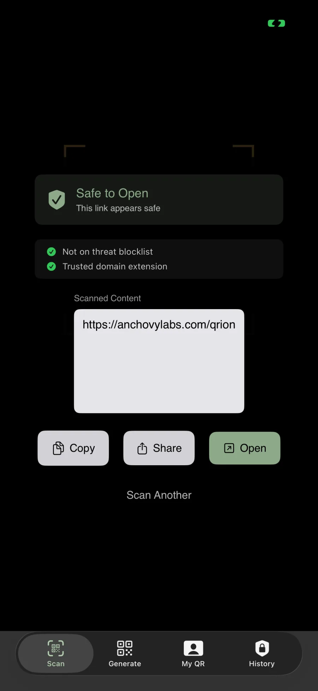
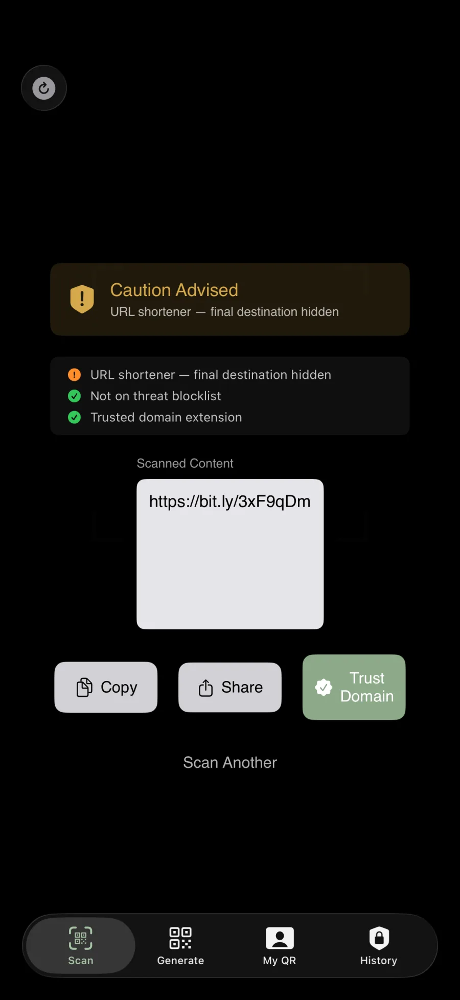
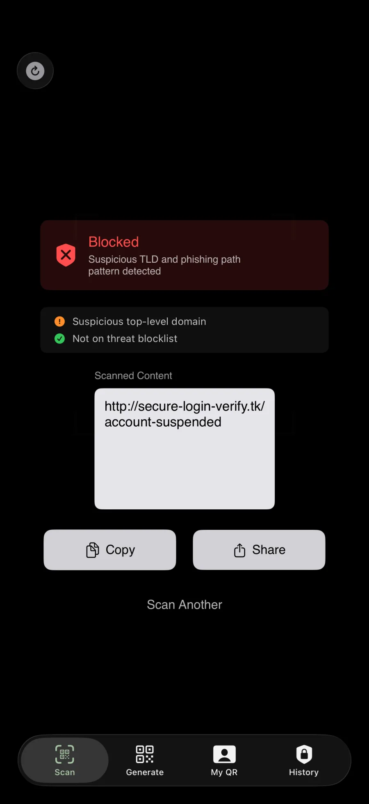
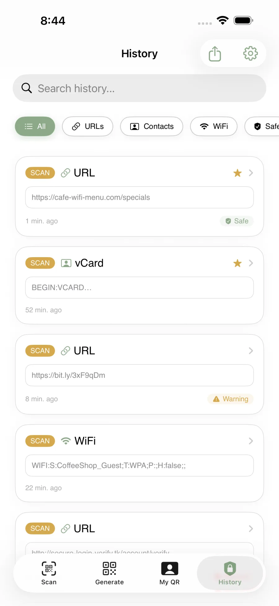
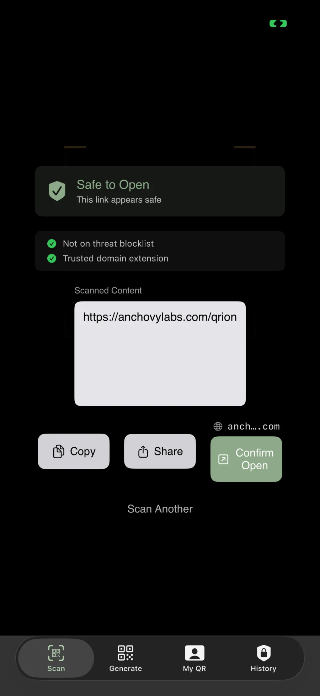

Verdict
Safe · Caution · Blocked
Clear states that help you slow down for one second — the second that prevents a surprising amount of trouble.
See where links lead first. Scan a QR code, inspect the destination, review a safety verdict, then decide with more context instead of tapping blind.
Clear states that help you slow down for one second — the second that prevents a surprising amount of trouble.
See the destination and the domain in a readable card, not a tiny toast that disappears.
QRion is built around inspection before action — including an explicit confirm-open moment.
Because the camera helps you open a QR code. QRion helps you inspect it first.
The App Store set is built around a simple narrative: preview → caution → blocked → history → confirm.





Quick scan, clear destination, then decide — without tiny transient UI.
See the domain before you pay. The risky stuff often looks “normal” at a glance.
Older relatives, kids, and tired brains deserve guardrails that slow the tap down.
Visit the FAQ or email support@anchovylabs.ai.